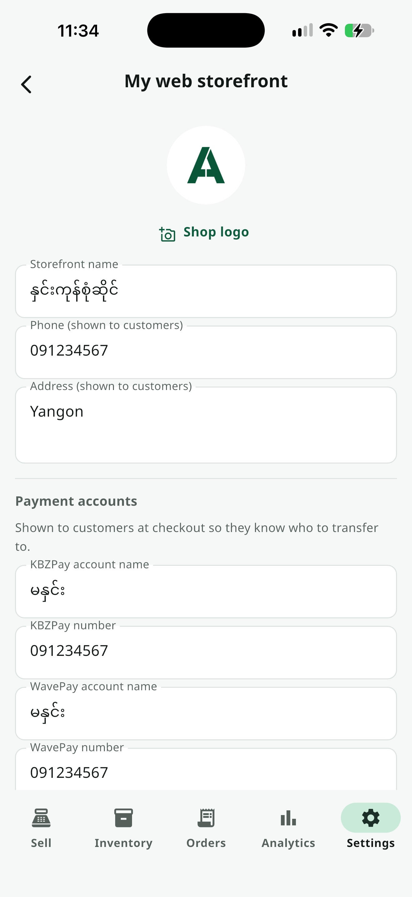
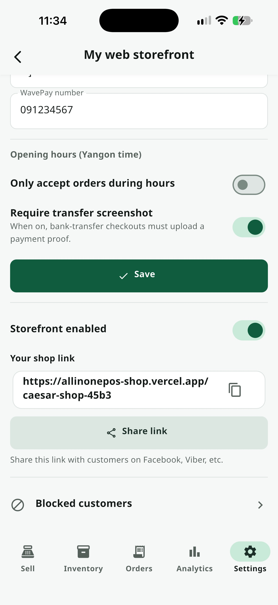

ဝန်ဆောင်မှုများ အားလုံး / ကျွန်ုပ်၏ Web ဆိုင်
ကျွန်ုပ်၏ Web ဆိုင်
Premiumဖောက်သည်များ App download မလိုဘဲ Browse လုပ်ပြီး Order တင်နိုင်တဲ့ Public ကုန်ပစ္စည်း Catalog စာမျက်နှာကို အခမဲ့ ထုတ်ဝေနိုင်ပါတယ် — Order များက သင့် Orders hub ထဲကို တိုက်ရိုက် ရောက်လာပြီး၊ Order လက်ခံမှုကို အချိန်မရွေး ဖွင့်/ပိတ် လုပ်နိုင်ပါတယ်။
အဆင့်ဆင့် အသုံးပြုနည်း

သင့် Web ဆိုင်ကို Publish လုပ်ပါ
ဆက်တင် → ကျွန်ုပ်၏ Web ဆိုင် သို့ဝင်ပါ။ ပထမဆုံးအကြိမ်တွင် ဆိုင်အမည် (မဖြစ်မနေ) နှင့် ဖောက်သည်များကို ပြသလိုသော ဖုန်းနံပါတ်၊ လိပ်စာကို ဖြည့်ပြီး "ဆိုင် ထုတ်ဝေမည်" ကို နှိပ်ပါ — App က သင့်ဆိုင်အတွက် Link ကို အလိုအလျောက် ဖန်တီးပေးလိမ့်မည်။

Logo, ငွေပေးချေမှုနှင့် ဖွင့်ချိန် သတ်မှတ်ပါ
Publish ပြီးလျှင် Manage စာမျက်နှာရရှိမည် — Pencil icon ကိုနှိပ်၍ Logo တင်နိုင်ပြီး၊ Checkout အတွက် KBZPay/WavePay အမည်နှင့် နံပါတ်ကို ထည့်နိုင်သည်။ Order များကို ဆိုင်ဖွင့်ချိန်အတွင်းသာ လက်ခံရန်လည်း ရွေးချယ်နိုင်သည်။ Order လက်ခံခင် ငွေလွှဲ Screenshot တင်ရန် မဖြစ်မနေ လုပ်နိုင်သော Switch တစ်ခုလည်း ရှိသည်။

သင့် Link ကို မျှဝေပြီး ဖွင့်/ပိတ် ပြောင်းပါ
သင့် Web ဆိုင် Link ကို ဒီစာမျက်နှာမှာပဲ အမြဲတွေ့ရမည် — Copy ခလုတ်နှင့် Native Share Sheet ဖွင့်ပေးသော Share ခလုတ် ပါသည် (Link ကို ဒီနေရာမှတစ်ပါး တခြားနေရာမှာ မတွေ့ရပါ)။ အောက်ဆုံးက Switch က စာမျက်နှာကို Unpublish မလုပ်ဘဲ Order လက်ခံမှုကို ချက်ချင်း ဖွင့်/ပိတ် လုပ်ပေးနိုင်သည်။
- စာမျက်နှာအောက်ခြေ "ပိတ်ပင်ထားသော ဝယ်သူများ" စာရင်းဖြင့် ဖုန်းနံပါတ်တစ်ခုကို နောက်ထပ် Order မတင်နိုင်အောင် Block လုပ်နိုင်သည်

Web Order များသည် Orders Hub ထဲသို့ ရောက်ရှိလာသည်
ဖောက်သည် Checkout လုပ်လိုက်ချိန် သီးခြား Inbox တစ်ခု မဖွင့်ဘဲ — Social Order များနှင့် Orders Hub တစ်ခုတည်းထဲမှာပဲ Globe Icon ဖြင့် ခွဲခြားပြထားသော Order တစ်ခု ဖန်တီးပေးသည်။ Web Order အသစ်ရောက်လာပါက App ကို နောက်ထပ်ဖွင့်ချိန်တွင် Notification ဖြင့် သတိပေးပါလိမ့်မည်။
သိထားသင့်တဲ့ Tips
Online Stock Limit — Active ဖြစ်နေသော ကုန်ပစ္စည်းအားလုံးသည် Default အနေဖြင့် Web ဆိုင်ပေါ် ပေါ်နေမည်။ Real Stock နှင့် သီးခြား Online တွင် ရောင်းနိုင်မည့် အရေအတွက်ကို ကန့်သတ်လိုပါက Inventory ထဲက ထိုကုန်ပစ္စည်း၏ "Online Stock Limit" ကို သတ်မှတ်ပါ။
ဖောက်သည်အတွက် App မလိုပါ — Web ဆိုင်သည် Public Web Page တစ်ခုသာ ဖြစ်သည် — ဖောက်သည်များ Browser မှတစ်ဆင့် Link ကို ဖွင့်ရုံဖြင့် Browse/Order လုပ်နိုင်သည်။
ဖွင့်ချိန် ချမှတ်ရန် မလိုအပ်ပါ — Switch ကို Off ထားလျှင် Web ဆိုင်သည် နေ့ညမရွေး Order အမြဲ လက်ခံနိုင်သည်။
Enabled Switch — Switch ကို Off လုပ်ခြင်းသည် Order အသစ်ကို ခဏရပ်ခြင်းသာ ဖြစ်သည် — သင့် Page နှင့် Link မှာ ဆက်လက်အလုပ်လုပ်နေမည်ဖြစ်ပြီး အချိန်မရွေး ပြန်ဖွင့်နိုင်သည်။
All In One POS ကို ယနေ့ပင် စမ်းကြည့်ပါ
2 လ အခမဲ့ စမ်းသပ်ကာလ — Card မလို၊ Sign up မလို။
ဒေါင်းလုပ်ဆွဲမည်